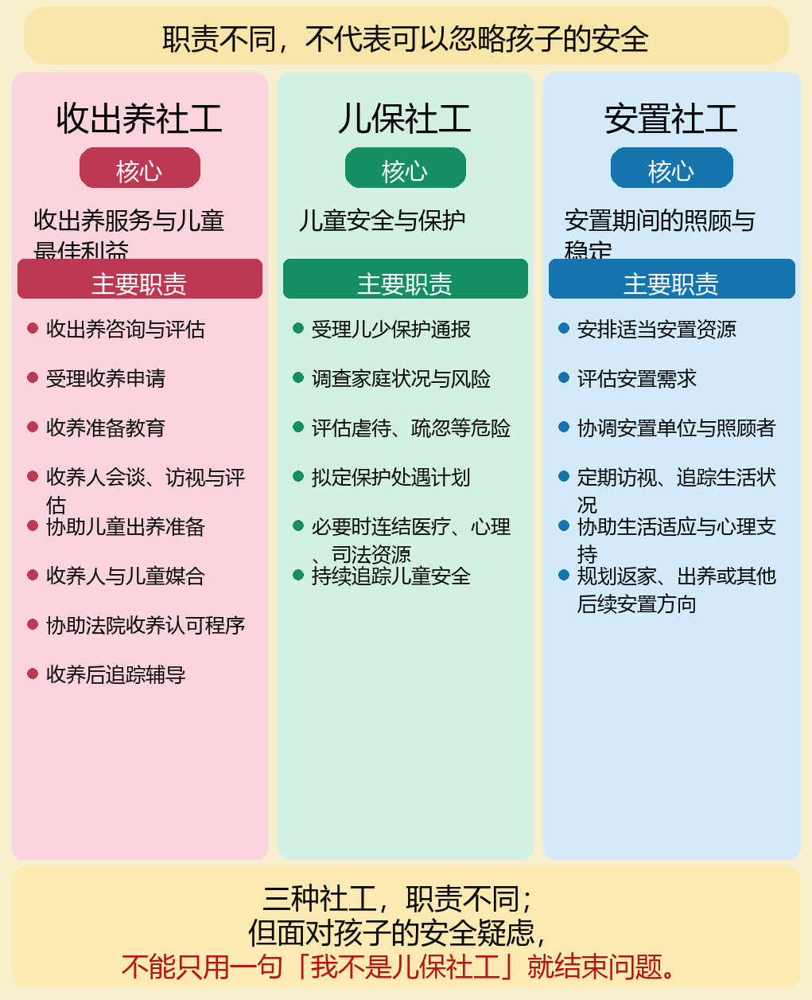

<!doctype html>
<html lang="zh-Hans"><head><meta charset="utf-8"><meta name="viewport" content="width=device-width,initial-scale=1">
<title>憟寡秩?芸楛?舀?箏蝷曉極嚗?隞亙摨??喟?隞€銋?嚚???撖?/title>
<meta name="description" content="?嗅?颯€靽?摰蔭?提銝?嚗撖孵蝡亙??函???韐?遙隞◆靘??縑?胯€?撌乩?霈啣?璉€撉€?>
<style>:root{--ink:#253d42;--jade:#367a6c;--paper:#f7f0e4}*{box-sizing:border-box}body{margin:0;background:var(--paper);color:var(--ink);font:17px/1.8 system-ui,"Noto Serif SC",serif}.wrap{width:min(980px,92vw);margin:auto}.hero{padding:70px 0 45px;background:linear-gradient(135deg,#214b46e8,#4c876fde),url('/child-advocacy-site/assets/art/recognition-blind-spots-autumn-impressionist-20260913.webp') center/cover;color:#fff}.tag{color:#ffe2a0;font-weight:800;letter-spacing:.08em}.hero h1{font-size:clamp(2.2rem,6vw,4.8rem);line-height:1.14;margin:.3em 0}.card,figure{margin:26px 0;padding:24px;border:1px solid #dfceb2;border-radius:20px;background:#fffdf8;box-shadow:0 12px 30px #31442218}figure{padding:0;overflow:hidden}figure img{display:block;width:min(100%,760px);height:auto;margin:auto}figcaption{padding:16px 22px;background:#e9f0e9;color:#405c55;font-size:.93rem}h2{color:var(--jade);line-height:1.3}.q{display:grid;grid-template-columns:repeat(3,1fr);gap:12px}.q b{padding:16px;border-radius:14px;background:#edf3e7}@media(max-width:700px){.q{grid-template-columns:1fr}.card{padding:20px}}</style><link rel="canonical" href="https://cn.globalprotectionwall.com/child-advocacy-site/zh-Hans/features/social-observation/adoption-social-work-child-safety-20260918/">
<link data-cpa-four-language-toolbar-style rel="stylesheet" href="/child-advocacy-site/assets/four-language-toolbar-20260901.css?v=20260909-5">
<script data-cpa-four-language-toolbar-flag>window.__cpaFourLanguageToolbar=true;</script>
<link rel="alternate" hreflang="zh-Hans" href="https://cn.globalprotectionwall.com/child-advocacy-site/zh-Hans/features/social-observation/adoption-social-work-child-safety-20260918/">
<link rel="alternate" hreflang="zh-Hant" href="https://jerryzuhow77.github.io/child-advocacy-site/features/social-observation/adoption-social-work-child-safety-20260918/">
</head>
<body><header class="hero"><div class="wrap"><p class="tag">?孵?銝? 繚 憭?閫? 繚 2026.09.18</p><h1>憟寡秩?芸楛?舀?箏蝷曉極嚗?br>?€隞亙摨??喟?隞€銋?</h1><p>?提?臭誑?箏?嚗酋摮?啣??函??嚗縑?胯€??其?鈭斗?賢鋡急?撉?銝?芰?妍?喳???/p></div></header>
<main class="wrap">
<section class="card"><b>答案先行：</b>收出养服务、居家托育访视与儿少保护并非同一职务；但只要发现孩子可能受有立即危险，资讯不应停留在原本的工作流程。</section>
<figure><figcaption><b>先分工，再接力：</b>角色不同不代表可以各自结案。重要的是：疑似风险何时被记录、何时复核、何时转介或通报，以及孩子是否真的被安全地看见。</figcaption></figure>
<section class="card"><h2>三个不能跳过的问题</h2><div class="q"><b>谁在第一时间看见不一致或警讯？</b><b>谁有权限、也有义务把风险升级？</b><b>升级后，谁确认孩子已得到实质保护？</b></div></section>
<section class="card"><h2>收出养社工能做什么？不能被要求什么？</h2><p>收出养社工的核心工作包括评估、媒合、支持与服务协调；其职务不等同于全面取代保护社工或执法人员。制度设计应明确处理跨系统资讯、督导复核与紧急风险的升级路径，避免把「分工」误解为「资讯可以不流动」。</p></section>
<section class="card"><h2>把制度焦点放回儿少安全</h2><p>讨论个案时，应以公开判决、庭讯纪录与可核对资料为界；尚待法院认定的事实，不应写成既定结论。真正可被检验的，是制度是否提供清楚门槛，让看见警讯的人知道下一步怎么做。</p><p><b>持续追问：</b>风险讯号是否被记录？督导是否复核？跨机关是否接住？这些问题，才是每个孩子都需要的安全网。</p></section>
</main>
<script src="/child-advocacy-site/assets/vendor/gsap-3.13.0.min.js"></script><script>if(window.gsap&&!matchMedia('(prefers-reduced-motion:reduce)').matches)gsap.from('.card,figure',{opacity:0,y:24,duration:.65,stagger:.1})</script><script data-cpa-four-language-toolbar-script src="/child-advocacy-site/assets/four-language-toolbar-20260901.js?v=20260911-hk-site-home-4"></script>
<script data-cpa-legal-notice-script src="/child-advocacy-site/assets/legal-notice.js?v=20260905-footer-1"></script>
</body></html>
